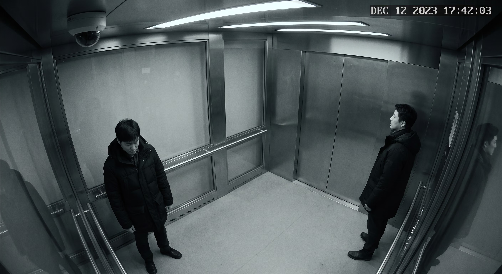
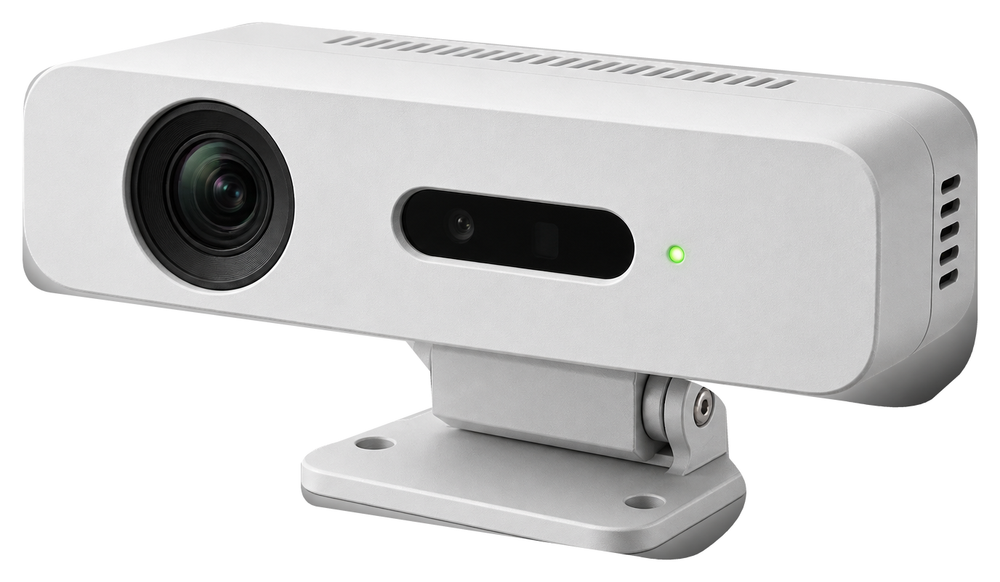

00 / STUDIO INDEXSAI / 2026
WE STUDY
WHAT HAPPENS
BETWEEN PEOPLE.
01
WHO WE ARE
WE OBSERVE
THE SPACE
BETWEEN PEOPLE.
We observe the signals
that appear before words.
Distance. Hesitation. Gaze. Movement.

02
OBSERVATION INDEX
Interpersonal spacing.
Direction of attention.
Movement through space.
Time spent in place.
Changes in path caused by proximity.
03
METHOD
04
SYSTEM
A-FIELD
DETECTION SYSTEM
A framework for observing
social tension through space.
- AIS / MEASURE
- Behavioural signals, read in context.
- SRS / PREDICT
- Intervention scenarios, tested before installation.
OBSERVATION DEVICE EXPLORER
DEVICE / OBSERVATIONDEVICE 01 / 03
IRU-01
INTERACTION RECORDING UNIT
상호작용 기록 카메라
사람과 사람 사이의 거리, 시선, 움직임과 머뭇거림을 하나의 시계열 데이터로 기록합니다.
- RANGE
- 0.6–12 m
- FIELD
- 142°
- SAMPLING
- 24 fps
- OUTPUT
- AIS READY
DISTANCE · GAZE · MOTION · DWELL

CAM 01 / IRU-01FOOTAGE PENDING
CCTV OBSERVATION MODE
실제 CCTV 영상 준비 중
REFERENCE FRAME / CASE 02405
ARCHIVE / EVIDENCE
THREE SITUATIONS.
THREE RECORDS.
OPEN ARCHIVE ↗| RECORD | SITUATION | OBSERVATIONS | RECORDED RESULT |
|---|---|---|---|
| Open case 024 ↗ | ELEVATOR | 684 | −31% AWKWARDNESS |
| Open case 019 ↗ | GOING HOME | 312 | −24% SILENCE |
| Open case 011 ↗ | NARROW WAY | 1,204 | −38% PATH CONFLICT |
Outcomes reproduced from the existing case archive. Visual studies are conceptual simulations.
06
STATEMENT
AWKWARDNESS
IS NOT NOTHING.
It exists between
people, space and time.